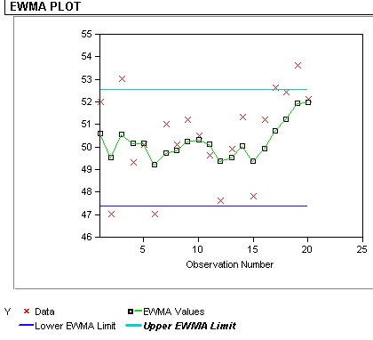

|
6.
Process or Product Monitoring and Control
6.3. Univariate and Multivariate Control Charts 6.3.1. What are Variables Control Charts?
|
|||
| EWMA statistic | The Exponentially Weighted Moving Average (EWMA) is a statistic for monitoring the process that averages the data in a way that gives less and less weight to data as they are further removed in time. | ||
| Comparison of Shewhart control chart and EWMA control chart techniques | For the Shewhart chart control
technique, the decision regarding the state of control of the process at
any time, t, depends solely on the most recent measurement from
the process and, of course, the degree of 'trueness' of the estimates of
the control limits from historical data. For the EWMA control technique,
the decision depends on the EWMA statistic which is an exponentially weighted
average of all prior data including the most recent measurement.
By the choice of weighting factor, l, the EWMA control procedure can be made sensitive to a small or gradual drift in the process; whereas the Shewhart control procedure can only react when the last data point is outside a control limit. |
||
| Definition of EWMA | The statistic that is calculated is:
where
|
||
| Choice of weighting factor | The parameter, l, determines the rate at which 'older' data enter into the calculation of the EWMA statistic. A value of l = 1 implies that only the most recent measurement influences the EWMA (degrades to Shewhart chart). Thus, a large value of l gives more weight to recent data and less weight to older data; a small value of l gives more weight to older data. The value of l is usually set between 0.2 and 0.3 (Hunter) although this choice is somewhat arbitrary. | ||
| Variance of EWMA statistic | The variance of the EWMA statistic is approximately
where s is the standard deviation calculated from the historical data. |
||
| Definition of control limits for EWMA | The center line for the control chart is the target value
or EWMA1. The control limits are:
UCL = EWMA1 - ksewma where the factor, k, is usually set to two or three depending on the number of out-of-control signals that can be tolerated in the process. As with all control procedures, the EWMA procedure depends on a database of measurements which are truly representative of the process. Once the target or mean value and standard deviation have been calculated from this database, the process can enter the monitoring stage. |
||
| Example of calculation of parameters for an EWMA control chart | To illustrate
the construction of an EWMA control chart, consider a process with the
following parameters calculated from historical data:
s = 2.0539 with l chosen to be 0.3
LCL = 50 - 3 (0.2471) (2.0539) = 47.4115 |
||
| Sample data | Consider the following data consisting of 20
points where 1 - 10 are on on the top row from left to right and 11-20
are on the bottom row from left to right:
52.0 47.0
53.0 49.3 50.1 47.0 51.0
50.1 51.2 50.5
These data represent control measurements from the process which is to be monitored using the EWMA control chart technique. The corresponding EWMA statistics that are computed from this data set are: |
||
| EWMA statistics for sample data | 50.00
50.60 49.52 50.56 50.18
50.16 49.12 49.75 49.85
50.26
50.33 50.11 49.36 49.52 50.05 49.34 49.92 50.73 51.23 51.94 The control chart is given below.  |
||
| Interpretation of EWMA control chart | The red dots are the
raw data; the jagged line is the EWMA statistic over time. The chart
tells us that the process is in control because all EWMAt lie
between the control limits. However, there seems to be a trend upwards
for the last 5 periods.
The prediction of the EWMA for time
t = 20 results in a prediction for the next time period of: EWMA21
This prediction is still below the UCL which indicates that there is no severe problem with the process at this time but that it should be carefully tracked in the future. |
||